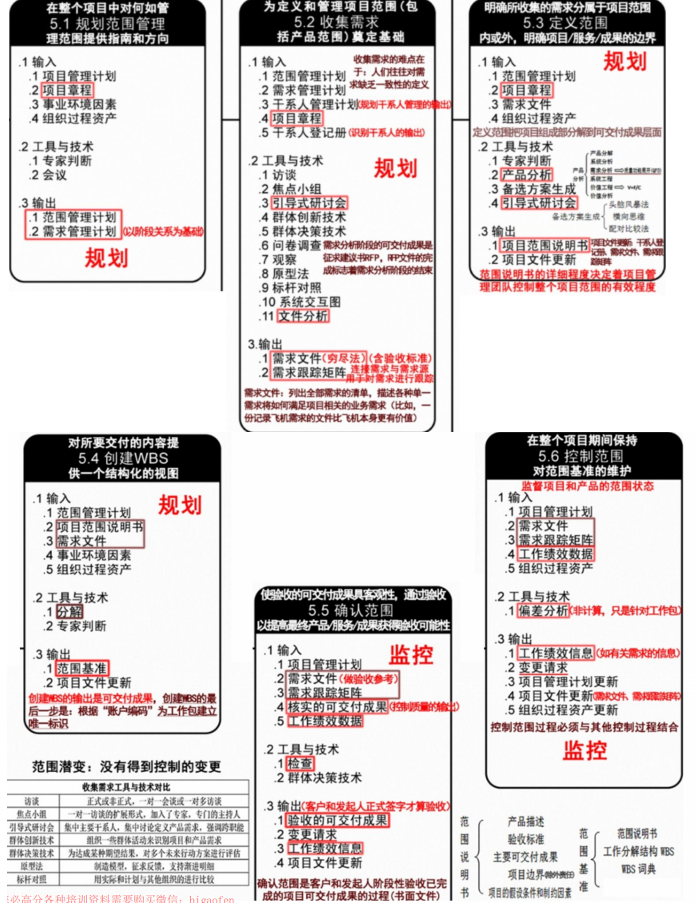
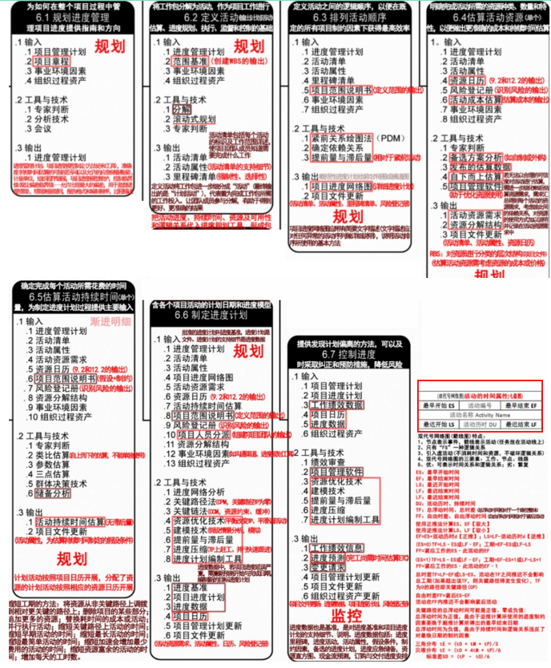
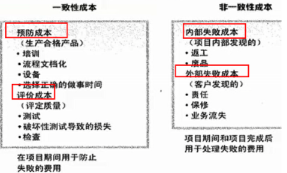
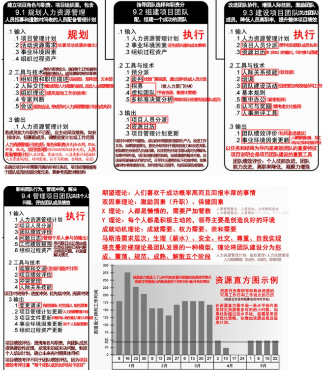
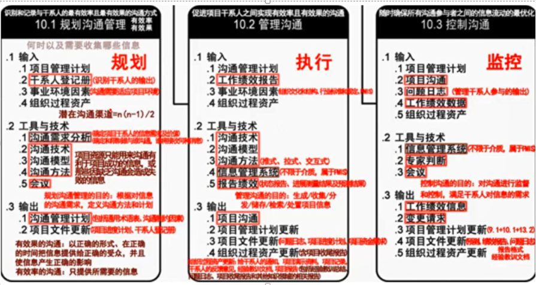
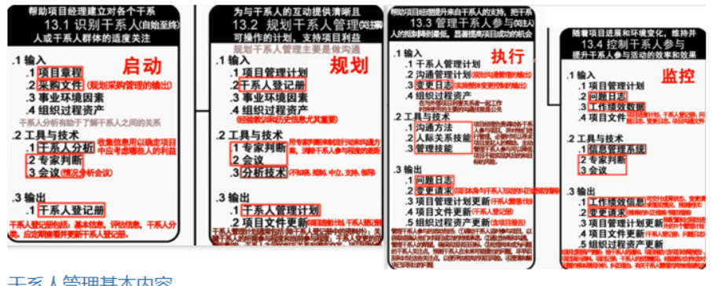
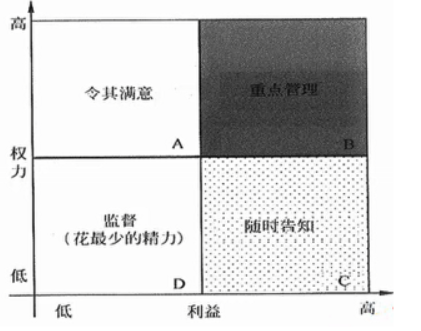

一，项目管理一般知识
项目关键干系人
- 项目经理
- 执行组织
- 项目团队成员
- 项目发起人
- 职能经理
- 客户
- 项目管理办公室(PMO)
项目经理的一般要求
- 足够的知识
- 丰富的项目管理经验
- 良好的协调和沟通能力
- 良好的职业道德
- 一定的领导和管理能力
怎样当好一个项目经理
- 真正理解项目经理的角色
- 领导并管理项目团队
- 依据项目进展的阶段，组织制订详细程度适宜的项目计划，监控计划的执行，根据实际情况、客户要求或其他变更要求对计划的变更进行管理
- 真正理解“一把手工程”
- 注重客户和用户参与
事业环境因素
也叫企业环境因素，项目经理不可操控和裁剪的，来自组织外部
- 实施单位的企业文化和组织机构
- 国家标准和行业标准
- 现有的设施和固定资产
- 实施单位现有的人力资源、人员的专业和技能、人力资源政策、员工绩效评估和培训记录
- 当时的市场状况
- 项目干系人对风险的承受力
- 行业数据库
- 项目管理信息系统
组织过程资产
项目经理可以控制和裁剪，来自内部
- 过程和程序
- 组织的标准过程
- 标准指导方针、模板、工作指南
- 标准过程的修正指南
- 组织的沟通要求，汇报制度
- 项目收尾指南和要求
- 财务控制程序
- 问题和缺陷管理程序
- 变更控制程序
- 风险控制程序
- 标准与发布工作授权程序
- 组织的全部知识
- 项目档案
- 过程测量数据库
- 经验学习系统
- 问题和缺陷管理数据库
- 配置管理数据库
- 财务数据库
二，立项管理
项目立项的内容
- 提交项目建议书
- 项目可行性研究
- 项目招标与投标
可行性研究内容
- 投资必要性
- 技术的可行性
- 财务可行性
- 组织可行性
- 经济可行性
- 社会可行性
- 风险因素及对策
可行性研究步骤
- 确定项目规模和目标
- 研究正在运行的系统
- 建立新系统的逻辑模型
- 导出和评价各种方案
- 推荐可行性方案
- 编写可行性研究报告
- 递交可行性研究报告
投资前期的四个阶段
- 机会研究
- 初步可行性研究
- 详细可行性研究
- 评估与决策
项目建议书的核心内容
- 项目的必要性
- 项目的市场预测
- 产品方案或服务的市场预测
- 项目建设必需的条件
承建方项目内部立项的内容
- 项目资源估算
- 项目资源分配
- 准备项目任务书
- 任命项目经理
三，整体管理
活动图谱

项目章程的内容
- 概括性的项目描述和项目产品描述。
- 项目目的或批准项目的理由，即为什么要做这个项目。
- 项目的总体要求，包括项目的总体范围和总体质量要求。
- 可测量的项目目标和相关的成功标准。
- 项目的主要风险，如项目的主要风险类别。
- 总体里程碑进度计划。
- 总体预算。
- 项目的审批要求，即在项目的规划、执行、监控和收尾过程中，应该由谁来做出哪种批准。
- 委派的项目经理及其职责和职权。
- 发起人或其他批准项目章程的人员的姓名和职权
项目章程的作用
- 明确项目地位；
- 项目经理授权；
- 规定总体目标（范围、时间、成本、质量等）；
- 项目与战略计划联系起来
项目管理计划的制定步骤
- 各具体知识领域制订各自的分项计划。
- 整体管理知识领域收集各分项计划，整合成项目管理计划。
- 用项目管理计划指导项目的执行和监控工作，并在执行过程中监控。
- 对提出的必要的变更请求，报实施整体变更控制过程审批。
- 根据经批准的变更请求，更新项目管理计划
项目管理计划的内容
- 所使用的项目管理过程。
- 每个特定项目管理过程的实施程度。
- 完成这些过程的工具和技术的描述。
- 项目所选用的生命周期及各阶段将采用的过程。
- 如何用选定的过程来管理具体的项目。包括过程之间的依赖与交互关系和基本的输入和输出。
- 如何执行工作来完成项目目标及对项目目标的描述。
- 如何监督和控制变更，明确如何对变更进行监控。
- 配置管理计划，用来明确如何开展配置管理。
- 对维护项目绩效基线的完整性的说明。
- 与项目干系人进行沟通的要求和技术。
- 为项目选择的生命周期模型。
- 为解决某些遗留问题和未定的决策，对于其内容、严重程度和紧迫程度进行的关键管理评审。
项目管理辅助计划
- 范围管理计划
- 需求管理计划
- 进度管理计划
- 成本管理计划
- 质量管理计划
- 过程改进计划
- 人力资源管理计划
- 沟通管理计划
- 风险管理计划
- 采购管理计划
- 干系人管理计划
整体变更控制过程
- 确定是否需要变更或者变更是否已经发生。
- 对妨碍整体变更控制的因素施加影响，保证只实施经过批准的变更。
- 审查和批准请求的变更。
- 控制申请变更的流程，在发生变更时管理批准的变更。
- 仅允许被批准的变更纳入到项目产品或服务之中，维护基准的完整，并维护项目产品或服务有关的配置与规划文件。
- 审查与批准所有的纠正与预防措施建议。
- 根据批准的变更控制与更新范围、成本、预算进度和质量要求，协调整个项目的变更。
- 将请求的变更的全部影响记录在案。
- 确认缺陷补救。
- 根据质量报告并按照标准控制项目质量
项目收尾
- 管理收尾
- 确定管理收尾程序
- 移交成果
- 执行程序
- 经验总结
- 项目归档
- 资源遣散
- 合同收尾
- 产品验收
- 合同管理收尾
变更控制流程
- 先沟通，书面申请；
- 评估变更影响（范围，进度，成本，质量等）并将影响通知干系人；
- CCB按流程审批；
- 变更审批不通过，则取消变更，纳入监控；变更审批通过则调整和更新项目管理计划和项目文件，并通知干系人；
- 根据要求执行变更，记录变更实施情况；
- 验证变更，归档；
四，范围管理
活动图谱

范围说明书内容
- 产品范围描述
- 验收标准
- 可交付成果
- 项目的除外责任
- 制约因素
- 假设条件
WBS分解的方法
- 项目生命周期各阶段作为分解的第二层，产品和项目可交付成果放在第三层
- 主要可交付成果作为分解的第二层
- 整合可能由项目团队以外的组织来实施的各种组件（例如，外包工作），然后作为外包工作的一部分，卖方需编制相应的合同WBS
WBS的表示形式
- 分级的树形结构
- WBS层次清晰，结构性强，但不易修改
- 不适合大的复杂的项目，适合小项目
- 表格形式
- 直观性差
- 能反映项目的所有工作要素，适合大项目
项目工作分解成工作包的步骤
- 识别和分析可交付成果及相关工作
- 确定WBS的结构和编排方式
- 自上而下逐层细化分解
- 为WBS组件制定和分配标识编码
- 核实可交付成果分解的程度是恰当的
WBS分析需要注意的8个方面
- WBS必须面向可交付成果
- 必须符合项目范围
- WBS的底层应该支持计划和控制
- WBS中的元素有且只有一个人负责
- WBS应控制在4-6层
- WBS应包括项目管理工作，和分包出去的工作
- WBS编制需要所有（主要）项目干系人和项目团队成员参与
- WBS可以随项目进展逐步修改更新
WBS需要把握的原则
- 在各层次上保持项目的完整性，避免遗漏必要的组成部分。
- 一个工作单元只能从属于某个上层单元，避免变叉从属。
- 相同层次的工作单元应有相同性质。
- 工作单元应能分开不同的责任者和不同工作内容。
- 便于项目管理进行计划和控制的管理需要。
- 最低层工作应该具有可比性，是可管理的，可定量检查的。
- 应包括项目管理工作（因为管理是项目具体工作的一部分），包括分包出去的工作
- WBS的最低层次的工作单元是工作包。一个项目的WBS是否分解到工作包
需求的状态
进行中、已取消、已推迟、新增加、已批准、已分配、己完成
五，进度管理
活动图谱

进度管理相关的工具技术
- 估算活动资源
- 专家判断
- 备选方案分析
- 发布的估算数据
- 项目管理软件
- 自下而上估算
- 估算活动持续时间
- 专家判断
- 类比估算
- 参数估算
- 三点估算
- 群体决策技术
- 储备分析
- 制定进度计划
- 进度网络分析
- 关键路径法
- 关键链法
- 资源优化技术
- 建模技术
- 提前量和滞后量
- 进度压缩
- 进度计划编制工具
- 进度控制
- 绩效审查
- 项目管理软件
- 资源优化技术
- 建模技术
- 提前量和滞后量
- 进度压缩
- 进度计划编制工具
缩短工期的方法
- 赶工，投入更多而资源或增加工作时间，以缩短关键活动的工期
- 快速跟进，并行施工，以缩短关键路径的长度
- 使用高素质的资源或经验丰富的人员
- 减小活动范围或降低活动要求
- 改进方法或技术，以提高生产效率
- 加强质量管理，及时发现问题，减少返工，缩短工期
监督项目进度的步骤
- 细化WBS，基于WBS和工时估算制定活动网络图，制定项目工作计划；
- 建立对项目工作的监督和测量机制；
- 确定项目里程碑，并建立有效的评审机制；
- 对项目中发现的问题，及时擦去纠正和预防措施，并进行有效的变更管理；
- 使用有效的项目管理工具，提升项目管理的工作效率；
- 通过改进方法和或技术提高生产效率；
六，成本管理
活动图谱

成本管理相关的工具技术
- 成本估算
- 专家判断
- 类比估算
- 参数估算
- 自下而上估算
- 三点估算
- 储备分析
- 质量成本
- 项目管理软件
- 卖方投标分析
- 群体决策技术
- 成本预算
- 成本汇总
- 储备分析
- 专家判断
- 历史关系
- 资源限制平衡
- 成本控制
- 挣值管理
- 预测
- 完工尚需绩效指数（TCPI）
- 绩效审查
- 项目管理软件
- 储备分析
成本估算的步骤
- 识别分析成本的构成科目，输出
- 资源需求
- 会计科目表
- 项目资源矩阵
- 根据已识别的成本构成科目，估算每一科目的成本大小
- 分析成本估算结果，找出可以相互替代的成本，协调个成本之间的比例关系
成本预算的原则
- 项目成本预算要以项目需求为基础。
- 项目成本预算要与项目目标相联系，必须同时考虑项目质量目标和进度目标。
- 项目成本预算要切实可行。
- 项目成本预算应当留有弹性
成本预算的步骤
- 将项目总成本分摊到项目工作分解结构的务个工作包．分解按照自顶向下，根据占用资源数量多少而设置不同的分解权重
- 将各个工作包成本再分配到该工作包所包含的各项适动上
- 确定各项成本预算支出的时间计划及项目成本预算计划
成本控制的内容
- 对造成成本基准变更的因素施加影响·
- 确保所有变更请求都得到及时处理。
- 当变更实际发生时，管理这些变更·
- 确保成本支出不超过批准的资金限额，既不超出按时段、按WBS组件、按活动分配的限额，也不超出项目总限额
- 监督成本绩效，找出并分析与成本基准间的偏差。
- 对照资金支出，监督工作绩效。
- 防止在成本或资源使用报告中出现未经批准的变更。
- 向有关干系人报告所有经批准的变更及其相关成本。
- 设法把预期的成本超支控制在可接受的范围内。
七，质量管理
活动图谱

质量体系建设问题
- 体系建设应全员参加；
- 体系应结合企业自身的质量要求和特点，不能照搬其他公司的文件或经验；
- 体系建设完后应及时运行，不断完善，而不是束之高阁；
- 在运行过程中，发现问题并进行改进，采用PDCA原则；
- 质量部门应全员参加质量管理和体系建设及运行；
- 项目应遵循组织质量体系，在组织的质量体系框架下进行质量管理
质量管理过程
- 确立质量标准体系；
- 对项目实施进行质量控制；
- 将实际与标准对照；
- 纠偏纠错
质量保证的内容
- 制定质量标准
- 制定质量控制流程
- 提出质量保证所采用方法和技术
- 建立质量保证体系
质量保证的作用
- 是保证质量的一个重要环节；
- 为持续的质量改进提供基础和方法；
- 为项目干系人提供对质量的信心；
- 是项目质量管理的一个重要内容；
- 与质量控制共同构成对质量的跟踪和保证
质量保证体系的内容
- 是否制定明确的质量计划
- 是否建立健全专职的质量管理机构
- 是否实现管理业务标准化，管理流程程序化
- 是否配备必要的资源条件
- 是否建立了一套灵敏的质量信息反馈系统
质量保证
过程符合要求，过程改进
- 按项目计划开展质量活动，使项目过程和产品符合质量要求，即按计划做质量；
- 提高项目干系人对项目将要满足质量要求的信心；
- 按过程改进计划进行过程改进，使项目过程稳定并减少非增值环节；
- 根据过去的质量测量控制结果对质量标准进行重新评价，确保所采用的质量标准上合理的可操作的
质量控制
结果符合要求，纠偏控制
- 按质量标准检查质量，发现质量偏差和质量缺陷，并对不可接受的质量偏差提出纠偏建议，对质量缺陷提出缺陷补救建议；
- 对已完成的可交付成果进行质量合格性检查：合格则输出核实的可交付成果，若不合格则提出变更请求；
- 对批准的变更请求实施情况进行检查：若实施到位则输出确认的变更，反之则输出新的变更请求
质量保证人员应该完成的工作
- 计划阶段制定质量管理计划和相应得质量标准
- 按计划实施质量检查，是否按标准过程实施项目工作。注意项目过程中的质量检查，每次进行检查之前准备各检查清单，并将质量管理相关情况予以记录
- 依据检查的情况和记录，分析问题，发现问題，与当事人协商进行解决。问题解决后要进行验证：如果无法与当事人达成一致，应报告项目经理或更高层领导，直至问题解决；
- 定期给项目干系人发质量报告
- 为项目组成员提供质量管理要求方面的培训或指导
过程改进方法
- 分析目前质量体系（质量管理）的现状；
- 找出问题及原因；
- 制定改进计划，确定措施；
- 确定改进职责，将工作分配到相关部门及人员；
- 执行改进计划；
- 对执行的过程及结果进行检查和评估；
- 进行总结和修改，形成正式质量体系，再不断改进
质量控制活动的内容
- 保证由内部或外部机构进行检测管理的一致性；
- 发现与质量标准的差异；
- 消除产品或服务过程中性能不被满足的原因；
- 审查质量标准以决定可以达到的目标及成本、效率问题，并且需要确定是否可以修订项目的质量标准或项目的具体目标
质量成本分类

质量7工具
- 老7工具：因果图、流程图、帕累托图、核查表、直方图、控制图、散点图；
- 新7工具：矩阵图、树形图、相互关系图、亲和图、过程决策方法图、活动网络图、优先矩阵

提升项目质量的步骤
- 建立项目质量目标；
- 建立工作中的质量保证和质量控制规范；
- 建立对质量（过程和产品）参数的度量体系；
- 在项目中对过程和产品进行测量/检查，将实际情况与目标和规范进行对比以发现质量问题，并对质量问题的处理进行监督和控制；
- 对质量问题的出现次数和影响程度依次进行分析，找出原因并提出改进措施；
- 在上述基础上，不断循环，坚持不懈地提升项目质量
全面质量管理TQM
- 四个要素
- 结构
- 技术
- 人员
- 变革推动者
- 四个核心特征
- 全员参与的质量管理
- 全过程的质量管理
- 全面方法的质量管理
- 全面结果的质量管理
八，人力资源管理
活动图谱

人力资源管理计划的内容
- 角色与职责
- 项目的组织结构图
- 人员配备管理计划：可以是不正式的、不详细的
- 人员招募
- 资源日历
- 人员遣散计划
- 培训需要
- 认可与奖励
- 合规性
- 安全
成功团队的特点
- 团队的目标明确，成员清楚自己的工作对目标的贡献。
- 团队的组织结构清晰，岗位明确。
- 有成文或习惯的工作流程和方法，而且流程简明有效。
- 项目经理对团队成员有明确的考核和评价标准，工作结果公正公开、赏罚分明
- 共同制订并遵守的组织纪律。
- 协同工作，也就是一个成员工作需要依赖于另一个成员的结果，善于总结和学习
人员配备管理计划的内容
- 人员招募
- 资源日历
- 人员遣散计划
- 培训需求
- 表彰和奖励
- 遵守的规定
- 安全性
团队建设5个阶段
注意：不管目前是什么阶段，增加一个人或减少一个人，都要从形成阶段重新开始
- 形成阶段：个体转变为团队成员，开始形成共同目标
- 震荡阶段：遇到困难，个体之间相互争执、相互指责
- 规范阶段：一段时间磨合，成员开始协同工作，相互信任
- 发挥阶段：集体荣誉感非常强
- 解散阶段：项目结束，团队解散
人力资源相关的工具技术
- 团队建设的工具
- 人际关系技能
- 培训
- 团队建设活动
- 基本规则
- 集中办公
- 认可与奖励
- 人事测评工具
- 管理团队的工具
- 观察和交谈
- 项目绩效评估
- 问题清单
- 人际关系技能
冲突解决的方法
- 撤退/回避：从实际或潜在冲突中退出，暂时的冲突解决方法
- 缓和/包容：强调一致，淡化分歧
- 妥协/调解：寻找让各方在一定程度上满意的方案
- 强迫/命令：以牺牲其他方为代价，推行某一方的观点
- 合作/解决问题：综合考虑不同意见，采用合作态度和开放式对话达成共识。最理想的结果
冲突的特点
- 冲突是自然地，而且要找到一个解决方法
- 冲突是一个团队问题，不是某人的个人问题
- 应公开的处理冲突
- 冲突的解决应聚焦问题，而不是人身攻击
- 冲突的解决应聚焦现在，而不是过去
沟通管理图谱

沟通管理计划的内容
- 通用术语表
- 干系人的沟通需求
- **需要沟通的信息，**语言、格式、内容、详细程度等
- 发布信息的原因
- 发布信息和做出回应的时限和频率
- 负责沟通相关信息的人员
- 负责授权保密信息发布的人员
- 将要接收信息的个人或小组
- 传递信息的技术方法
- 为沟通分配的资源，时间和预算等
- 问题升级程序，用于规定下层员工上报问题的时限和路径
- 随项目进展，对沟通管理计划进行更新和优化的方法
- 项目信息流向图、工作流程、报告清单、会议计划等
- 沟通制约因素，例如法律法规、技术要求，组织政策等
- 关于项目状态会议、团队会议、网络会议和电子邮件等的指南和模板
- 对项目使用的网站和管理软件的使用说明
干系人活动图谱

干系人登记手册的内容
- 基本信息：干系人的姓名、职位、地点、项目角色、联系方式
- 评估信息：主要需求、主要期望、对项目的潜在影响、与生命周期的哪个阶段最密切相关
- 干系人分类：关键干系人/非关键干系人、内部/外部、支持者/中立者/反对者
干系人管理计划的内容
- 关键干系人的所需参与程度、当前参与程度
- 干系人变更的范围和影响
- 干系人之间的关系和潜在关系
- 项目现阶段的干系人沟通需求
- 需要分发给干系人的信息
- 分发相关信息的理由和影响
- 向干系人发信息的频率和时限
- 随项目进展，更新和优化干系人管理计划
管理干系人的过程活动
- 调动干系人适时参与项目，用于获得和确认他们对项目成功的持续承诺
- 协商和沟通管理干系人的期望、确保项目目标实现
- 处理尚未成为问题的干系人关注点，预测干系人未来可能提出的问题
- 识别和讨论关注点，评估项目风险
- 澄清和解决已识别出的问题
权力利益方格

十，合同管理
无效合同
- 一方以欺诈、胁遗的手段订立合同。
- 恶意串通，损害国家、集体或者第三人利益。
- 以合法形式掩盖非法目的。
- 损害社会公共利益。
- 违反法律、行政法规的强制性规定
项目费用工程款的支付方式的内容
- 支付贷款的条件
- 结算支付的方式
- 拒付货款的条件。发包方有权部分或全部拒付货款
合同法规定的4中违约责任
- 继续履行
- 采取补救措施
- 赔偿损失
- 支付约定违约金或定金
合同管理过程
- 合同签订管理
- 合同履行管理
- 合同变更管理
- 合同档案管理：整个合同管理的基础
- 合同违约索赔管理
合同签订的注意事项
- 当事人的法律资格：民事权力能力
- 质量验收标准：验收是否合格
- 验收时间：什么时候验收
- 技术支持服务：明确技术支持，后续服务
- 损害赔偿：
- 保密约定：当事人在订立合同过程中知悉的商业秘密，无论合同是否成立，不得泄露或者不正当地使用
- 知识产权约定：合同生效后，当事人就质量、价款或者报酬、履行地点等内容没有约定或者约定不明确的，可以协议补充：不能达成补充协议的，按照合同有关条款或者交易习惯确定；
- 合同附件;法律公证
变更合同价款的方法
- 首先确定合同变更量清单，然后确定变更价款。
- 合同中已有适用于项目变更的价格，按合同已有的价格变更合同价款。
- 合同中只有类似于项目变更的价格，可以参照类似价格变更合同价款。
- 合同中没有适用或类似项目变更的价格，由承包人提出适当的变更价格，经监理工程师和业主确认后执行
索赔流程
- 提出索赔要求
- 报送索赔资料
- 监理工程师答复
- 监理工程师逾期答复后果
- 持续索赔
- 仲裁与诉讼（28天）
技术合同的内容
- 项目名称
- 标的内容和范围
- 项目的质量要求
- 项目的计划、进度地点、地域和方式
- 项目建设过程中的各种期限
- 技术情报和资料的保密
- 风险责任承担
- 技术成果的归属
- 验收的标准和方法
- 价款、报酬（或使用费）及其支付方式
- 违约金或者损失賠偿的计算方法
- 解决争议的方法
- 名词术语解释
十一，配置管理
配置管理6个活动
- 制订配置管理计划
- 配置标识
- 配置控制
- 配置状态报告
- 配置审计
- 发布管理和交付
配置管理计划内容
- 配置管理活动，主要包括配置标识、配置控制、配置状态报告、配置审计、发布管理和交付
- 实施这些活动的规范和流程
- 实施这些活动的进度安排
- 负责实施活动的人员或组织，和它们与其他组织的关系
配置识别的内容
- 识别需要受控的配置项；
- 为每个配置项指定唯一性的标识号；
- 定义每个配置项的重要特征；
- 确定每个配置项的所有者及其责任；
- 确定配置项进入配置管理的时间和条件；
- 建立和控制基线；
- 维护文档和组件的修订与产品版本之间的关系
建立基线的好处
- 基线为开发工作提供了一个定点和快照。
- 新项目可以在基线提供的定点上建立。新项目作为一个单独分支，将与随后对原始项目（在主要分支上）所进行的变更进行隔离。
- 当认为更新不稳定或不可信时，基线为团队提供一种取消变更的方法。
- 可以利用基线重新建立基于某个特定发布版本的配置，以重现己报告的错误
配置库分类
- 开发库
- 受控库
- 产品库
建库的两种模式
- 按配置项类型建库：适用于通用软件开发
- 按开发任务建库：适用于专业软件开发
配置库的主要作用
- 记录与配置相关的所有信息，其中存放受控的软件配置项是很重要的内容。
- 利用库中的信息可评价变更的后果，这对变更控制有着重要的意义。
- 从库中可提取各种配置管理过程的管理信息，可利用库中的信息查询回答许多配置管理的问题
配置审计作用
- 防止向用户提交不适合的产品，如交付了用户手册的不正确版本
- 发现不完善的实现，如开发出不符合初始规格说明或未按变更请求实施变更
- 找出各配置项间不匹配或不相容的现象
- 确认配置项已在所要求的质量控制审核之后纳入基线并入库保存
- 确认记录和文档报纸可追溯性
十二，变更管理
变更的流程
- 提出与接受变更申请
- 对变更的初审
- 变更方案论证
- 项目管理委员会审查
- 发出变更通知并组织实施
- 变更实施的监控
- 变更效果的评估
- 判断发生变更后的项目是否已纳入正常轨道
项目经理在变更中的作用
- 响应变更提出者的需求，评估变更对项目的影响及应对方案，将需求由技术要求转化为资源需求，供授权人决策
- 据评审结果实施即调整基准。确保项目基准反映项目实施情况
变更可能存在的问题
- 没有设置变更影响分析环节
- 没有建立变更控制委员会来审核变更
- 所有变更都必须走变更流程，而不是影响不大的就直接修改
- 由变更控制委员会审核变更请求，而不是项目经理
- 对变更没有进行记录
- 缺少对变更实施过程的有效监控
- 变更结束后要通知相关受影响人员，而不仅仅只项目经理确认
- 项目变更后投有通知相关干系人存在问题。
- 没有做好配置管理和版本管理
- 变更没有产生相关的变更文档
十三，风险管理
活动图谱

可能遇到的风险
- 需求风险
- 技术风险
- 政策风险，法律法规风险；
- 市场风险
- 运行风险
- 团队风险；关键人员风险
- 预算风险；
- 范围，成本，质量等其它风险
风险管理计划内容
- 方法论
- 角色与职责
- 预算
- 时间安排
- 风险类别
- 风险概率和影响的定义
- 概率和影响矩阵
- 修改的项目干系人承受度
- 报告格式
- 跟踪
风险应对措施
- 消极风险和威胁： 规避、转移、减轻、接受
- 积极风险和威胁：开拓、提高、分享、接受
权变措施/应急计划/弹回计划
- 权变措施：未事先计划，控制风险推荐的纠正措施，非工具与技术，未识别的风险发生时，或计划应对均失效时使用，可能用管理储备；
- 应急计划：事先计划的，规划风险应对工具中使用，风险有充分预警信号，预定条件发生时，用应急储备；
- 弹回计划：事先计划的，规划风险应对工具中使用，主要应对计划失效时的后备计划，用应急储备
风险登记册的内容
- 已识别风险清单
- 潜在应对措施清单
- 风险根本原因
- 风险类别更新
- 更新的风险分类
十四，收尾管理
项目收尾的内容
- 项目验收
- 验收测试
- 系统试运行
- 系统的文档验收
- 系统集成项目介绍
- 系统集成项目最终报告
- 信息系统说明手册
- 信息系统维护手册
- 软硬件产品说明书、质量保证书
- 项目终验
- 项目总结
- 内容
- 项目绩效
- 技术绩效
- 成本绩效
- 进度计划绩效
- 项目的沟通
- 识别问题和解决问题
- 意见和建议
- 意义
- 了解项目全过程的工作情况和相关团队与成员的绩效状况
- 了解出现的问题病进行改进措施总结
- 了解项目全过程中出现的经验教训，进行总结
- 对总结侯文娟进行讨论，纳入公司知识库，成为企业的过程资产
- 内容
- 系统维护
- 软件bug修改
- 软件升级
- 后续技术支持
- 系统日常维护
- 硬件产品更新
- 新需求
- 项目后评价
- 目标评价
- 过程评价
- 效益评价
- 可持续性评价
十五，采购管理图谱